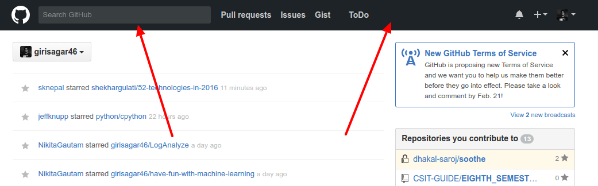
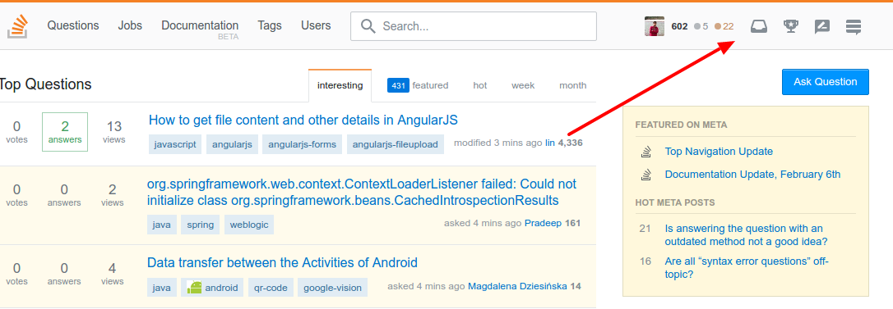

UI Change For Stackoverflow and Github
Posted on February 14, 2017 in tech, thoughts • 1 min read
GitHub and Stack Overflow both of these websites have updated their UI. As far as I have seen, mainly the header part or the main navigation menu has been modified.
GitHub has changed it's header color from old silverish background to full black background.

Similarly, Stack Overflow also has updated it's navbar UI. I totally liked these new navbar interface and I'm totally digging it.

Recently wired.com has also published a news about how Linkedin is changing it's interface and making it look like facebookish. More at: https://www.wired.com/2017/01/new-linkedin-looks-just-like-facebook-smart-move/